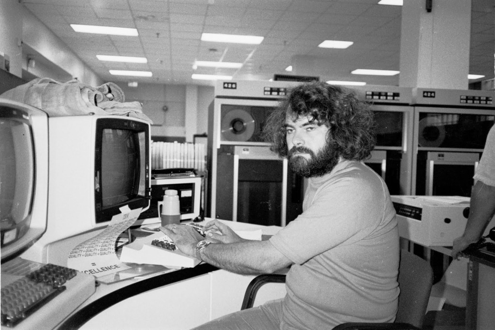

Seguro que muchos los conocéis de oídas. Son lenguajes de programación con solera, más de la generación de nuestros padres (e incluso abuelos) que de nuestra generación. COBOL se creó en 1959. Fortran, en 1957. Delphi, mucho más moderno, es de 1995. Todos ellos fueron muy populares en su día, pero lo más importante: siguen siendo críticos en diversos escenarios hoy en día.
COBOL es el mejor ejemplo de una situación preocupante: la industria bancaria sigue utilizando sistemas basados en COBOL que gestionan todo tipo de operaciones, y de hecho se estima que solo en Estados Unidos 3 billones de dólares se transfieren a través de unos sistemas que cada vez tienen a menos gente que los entienda.
Desarrolladores de la tercera edad
Existen empresas que aparentemente tenían que haber cerrado hace años y que están en mejor forma que nunca: Bill Hinshaw, de 75 años, está al frente de una empresa que precisamente da soporte a otras que siguen teniendo sistemas basados en COBOL.
Este veterano que comenzó a programar en los 60 y se hizo un experto en COBOL descubrió cómo 40 o 50 años después no solo no había menos empresas que le llamaban, sino que acababa siendo uno de los pocos recursos que quedaban para solucionar problemas en sistemas COBOL en su zona geográfica. Hinshaw acabó creando la empresa 'COBOL Cowboys' para contratar a programadores con experiencia en COBOL. La empresa acabó contratando a un buen número de ellos, buena parte de los cuales ya habían alcanzado la jubilación. Los "jovencitos", como él declaraba en broma, "andan por los 40 o los 50".
IBM es una de las empresas que ha descubierto una oportunidad en esta circunstancia. Ha creado una serie de programas de formación para jóvenes desarrolladores, y los responsables de estos programas afirman que han formado a más de 180.000 desarrolladores en 12 años. Donna Dillenberger, una de las responsables de la iniciativa, explicaba que "el que un lenguaje tenga 50 años de edad no significa que no sea bueno". Algunos argumentan que los bancos deberían migrar a sistemas modernos de forma gradual para minimizar el impacto y los riesgos. Daniel Döderlein, CEO de Auka, explicaba que los sistemas basados en COBOL funcionan bien hoy en día pero siendo un lenguaje tan maduro "la gente que está dando servicio a esta tecnología son una raza moribunda"